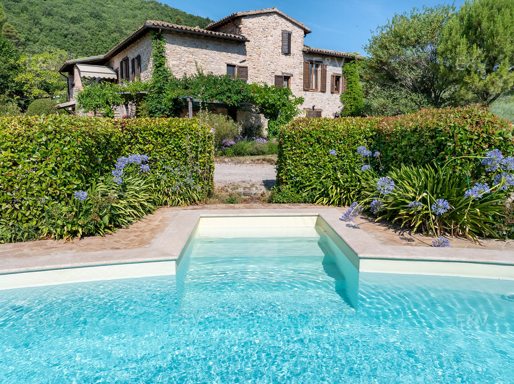

€390.000
Morcicchia, Umbria
Open the listingCharacter brief in stone: exposed beams, terracotta, loggia staircase and a built pool on a natural terrace looking at olives and the valley. Habitable now at €390k — well under the ~€750k restored-with-pool bargain line. Semi-detached (main part of late-18th-c building) but private courtyard and private pool.
Opened 2 Sep 2026. Schema/salesPrice €390000. 2 bed / 2 bath / 343 m² total / plot 3,400 m² / garden 1,500. Condition veryGood. Dirt-road access; wine cellar and recent annex. Independent of montefalco-pool and vibio-todi.